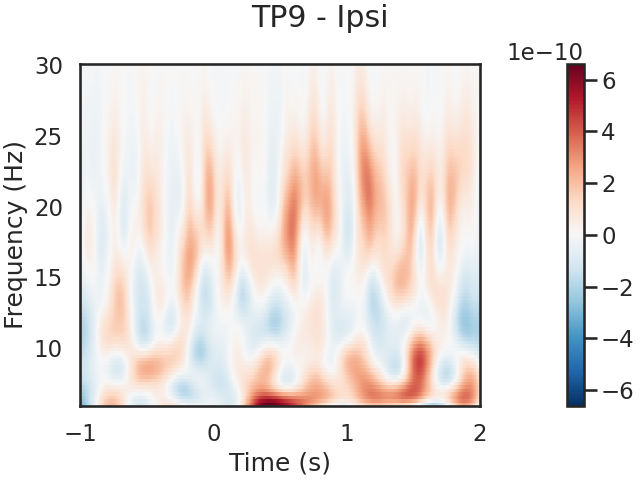
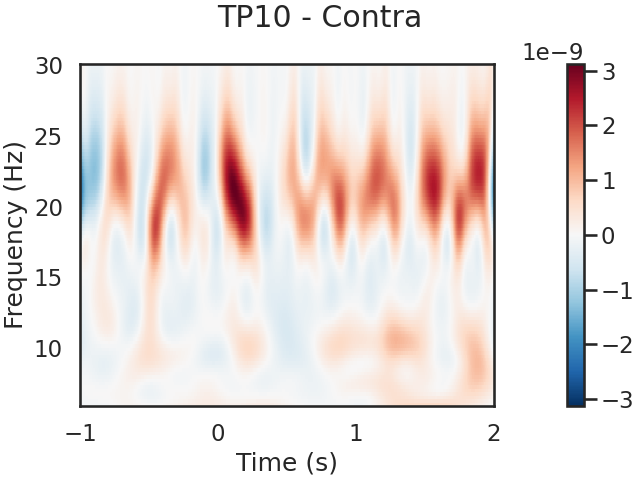
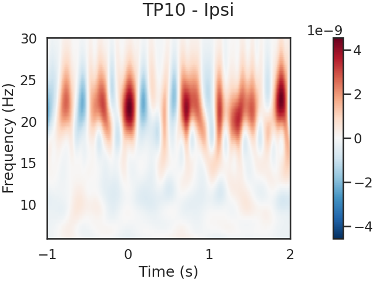
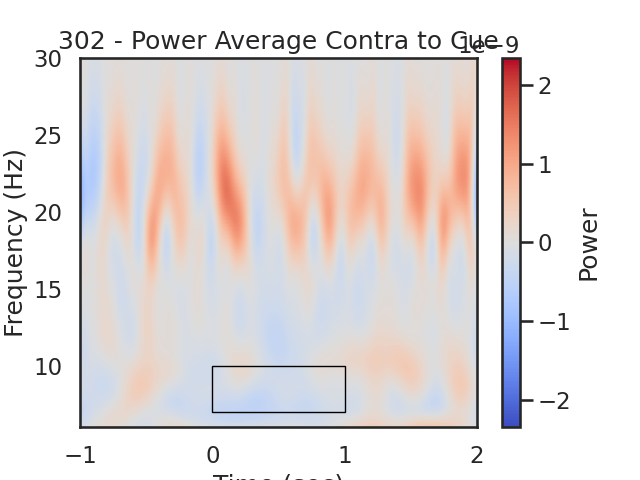

Note
Click here to download the full example code
Cueing Single Subject Analysis¶
Setup¶
# Some standard pythonic imports
import os,sys,glob,numpy as np,pandas as pd
from collections import OrderedDict
import warnings
warnings.filterwarnings('ignore')
from matplotlib import pyplot as plt
import matplotlib.patches as patches
# MNE functions
from mne import Epochs,find_events, concatenate_raws
from mne.time_frequency import tfr_morlet
# EEG-Notebooks functions
from eegnb.analysis.utils import load_data,plot_conditions
from eegnb.datasets import fetch_dataset
# sphinx_gallery_thumbnail_number = 1
Load Data¶
We will use the eeg-notebooks visual cueing example dataset
eegnb_data_path = os.path.join(os.path.expanduser('~/'),'.eegnb', 'data')
cueing_data_path = os.path.join(eegnb_data_path, 'visual-cueing', 'kylemathlab_dev')
# If dataset hasn't been downloaded yet, download it
if not os.path.isdir(cueing_data_path):
fetch_dataset(data_dir=eegnb_data_path, experiment='visual-cueing', site='kylemathlab_dev');
sub = 302
sess = 1
raw = load_data(sub,1, # subject, session
experiment='visual-cueing',site='kylemathlab_dev',device_name='muse2016',
data_dir = eegnb_data_path)
raw.append(
load_data(sub,2, # subject, session
experiment='visual-cueing', site='kylemathlab_dev', device_name='muse2016',
data_dir = eegnb_data_path))
Out:
Downloading...
From: https://drive.google.com/uc?id=1ABOVJ9S0BeJOsqdGFnexaTFZ-ZcsIXfQ
To: /home/runner/.eegnb/data/downloaded_data.zip
0%| | 0.00/102M [00:00<?, ?B/s]
5%|5 | 5.24M/102M [00:00<00:01, 49.8MB/s]
10%|# | 10.5M/102M [00:00<00:01, 49.8MB/s]
25%|##5 | 25.7M/102M [00:00<00:00, 90.9MB/s]
42%|####1 | 42.5M/102M [00:00<00:00, 85.6MB/s]
57%|#####6 | 57.7M/102M [00:00<00:00, 104MB/s]
68%|######7 | 68.7M/102M [00:00<00:00, 74.1MB/s]
83%|########3 | 84.4M/102M [00:01<00:00, 83.1MB/s]
92%|#########2| 93.8M/102M [00:01<00:00, 85.5MB/s]
100%|##########| 102M/102M [00:01<00:00, 86.7MB/s]
['TP9', 'AF7', 'AF8', 'TP10', 'Right AUX', 'stim']
['TP9', 'AF7', 'AF8', 'TP10', 'Right AUX', 'stim']
Creating RawArray with float64 data, n_channels=6, n_times=61296
Range : 0 ... 61295 = 0.000 ... 239.434 secs
Ready.
['TP9', 'AF7', 'AF8', 'TP10', 'Right AUX', 'stim']
['TP9', 'AF7', 'AF8', 'TP10', 'Right AUX', 'stim']
Creating RawArray with float64 data, n_channels=6, n_times=61296
Range : 0 ... 61295 = 0.000 ... 239.434 secs
Ready.
['TP9', 'AF7', 'AF8', 'TP10', 'Right AUX', 'stim']
['TP9', 'AF7', 'AF8', 'TP10', 'Right AUX', 'stim']
Creating RawArray with float64 data, n_channels=6, n_times=61296
Range : 0 ... 61295 = 0.000 ... 239.434 secs
Ready.
Cropping annotations 0 - 718.3125
Visualize the power spectrum¶
Plot raw data
raw.plot();
Out:
Using matplotlib as 2D backend.
<MNEBrowseFigure size 800x800 with 4 Axes>
Power Spectral Density¶
One way to analyze the SSVEP is to plot the power spectral density, or PSD. SSVEPs should appear as peaks in power for certain frequencies. We expect clear peaks in the spectral domain at the stimulation frequencies of 30 and 20 Hz.
raw.plot_psd();
# Should see the electrical noise at 60 Hz, and maybe a peak at the red and blue channels between 7-14 Hz (Alpha)
Out:
Effective window size : 8.000 (s)
Spectogram using 2048-point FFT on 2048 samples with 0 overlap and hamming window
Generating pos outlines with sphere [0. 0. 0. 0.095] from [0. 0. 0. 0.095] for eeg
Generating coords using: [0. 0. 0. 0.095]
<MNELineFigure size 1000x350 with 2 Axes>
Filtering¶
Most ERP components are composed of lower frequency fluctuations in the EEG signal. Thus, we can filter out all frequencies between 1 and 30 hz in order to increase our ability to detect them.
raw.filter(1,30, method='iir')
raw.plot_psd(fmin=1, fmax=30);
Out:
Filtering raw data in 3 contiguous segments
Setting up band-pass filter from 1 - 30 Hz
Using filter length: 61296
IIR filter parameters
---------------------
Butterworth bandpass zero-phase (two-pass forward and reverse) non-causal filter:
- Filter order 16 (effective, after forward-backward)
- Cutoffs at 1.00, 30.00 Hz: -6.02, -6.02 dB
Effective window size : 8.000 (s)
Spectogram using 2048-point FFT on 2048 samples with 0 overlap and hamming window
Generating pos outlines with sphere [0. 0. 0. 0.095] from [0. 0. 0. 0.095] for eeg
Generating coords using: [0. 0. 0. 0.095]
<MNELineFigure size 1000x350 with 2 Axes>
Epoching¶
Next, we will chunk (epoch) the data into segments representing the data 1000ms before to 2000ms after each cue, we will reject every epoch where the amplitude of the signal exceeded 100 uV, which should most eye blinks.
raw.filter(1,30, method='iir')
events = find_events(raw)
event_id = {'LeftCue': 1, 'RightCue': 2}
rej_thresh_uV = 150
rej_thresh = rej_thresh_uV*1e-6
epochs = Epochs(raw, events=events, event_id=event_id,
tmin=-1, tmax=2, baseline=(-1, 0),
reject={'eeg':rej_thresh}, preload=True,
verbose=False, picks=[0, 1, 2, 3])
print('sample drop %: ', (1 - len(epochs.events)/len(events)) * 100)
conditions = OrderedDict()
conditions['LeftCue'] = [1]
conditions['RightCue'] = [2]
fig, ax = plot_conditions(epochs, conditions=conditions,
ci=97.5, n_boot=1000, title='',
diff_waveform=(1, 2), ylim=(-20,20))
Out:
Filtering raw data in 3 contiguous segments
Setting up band-pass filter from 1 - 30 Hz
Using filter length: 61296
IIR filter parameters
---------------------
Butterworth bandpass zero-phase (two-pass forward and reverse) non-causal filter:
- Filter order 16 (effective, after forward-backward)
- Cutoffs at 1.00, 30.00 Hz: -6.02, -6.02 dB
213 events found
Event IDs: [ 1 2 11 12 21 22]
sample drop %: 95.77464788732395
Spectrogram¶
We can also look for SSVEPs in the spectrogram, which uses color to represent the power of frequencies in the EEG signal over time
frequencies = np.linspace(6, 30, 100, endpoint=True)
wave_cycles = 6
# Compute morlet wavelet
# Left Cue
tfr, itc = tfr_morlet(epochs['LeftCue'], freqs=frequencies,
n_cycles=wave_cycles, return_itc=True)
tfr = tfr.apply_baseline([-1,-.5],mode='mean')
tfr.plot(picks=[0], mode='logratio',
title='TP9 - Ipsi');
tfr.plot(picks=[1], mode='logratio',
title='TP10 - Contra');
power_Ipsi_TP9 = tfr.data[0,:,:]
power_Contra_TP10 = tfr.data[1,:,:]
# Right Cue
tfr, itc = tfr_morlet(epochs['RightCue'], freqs=frequencies,
n_cycles=wave_cycles, return_itc=True)
tfr = tfr.apply_baseline([-1,-.5],mode='mean')
tfr.plot(picks=[0], mode='logratio',
title='TP9 - Contra');
tfr.plot(picks=[1], mode='logratio',
title='TP10 - Ipsi');
power_Contra_TP9 = tfr.data[0,:,:]
power_Ipsi_TP10 = tfr.data[1,:,:]
- 
- 
- 
Out:
Applying baseline correction (mode: mean)
No baseline correction applied
No baseline correction applied
Applying baseline correction (mode: mean)
No baseline correction applied
No baseline correction applied
Now we compute and plot the differences¶
time frequency window for analysis
f_low = 7 # Hz
f_high = 10
f_diff = f_high-f_low
t_low = 0 # s
t_high = 1
t_diff = t_high-t_low
# Plot Differences
times = epochs.times
power_Avg_Ipsi = (power_Ipsi_TP9+power_Ipsi_TP10)/2;
power_Avg_Contra = (power_Contra_TP9+power_Contra_TP10)/2;
power_Avg_Diff = power_Avg_Ipsi-power_Avg_Contra;
# find max to make color range
plot_max = np.max([np.max(np.abs(power_Avg_Ipsi)), np.max(np.abs(power_Avg_Contra))])
plot_diff_max = np.max(np.abs(power_Avg_Diff))
# Ipsi
fig, ax = plt.subplots(1)
im = plt.imshow(power_Avg_Ipsi,
extent=[times[0], times[-1], frequencies[0], frequencies[-1]],
aspect='auto', origin='lower', cmap='coolwarm', vmin=-plot_max, vmax=plot_max)
plt.xlabel('Time (sec)')
plt.ylabel('Frequency (Hz)')
plt.title('Power Average Ipsilateral to Cue')
cb = fig.colorbar(im)
cb.set_label('Power')
# Create a Rectangle patch
rect = patches.Rectangle((t_low,f_low),t_diff,f_diff,linewidth=1,edgecolor='k',facecolor='none')
# Add the patch to the Axes
ax.add_patch(rect)
#TP10
fig, ax = plt.subplots(1)
im = plt.imshow(power_Avg_Contra,
extent=[times[0], times[-1], frequencies[0], frequencies[-1]],
aspect='auto', origin='lower', cmap='coolwarm', vmin=-plot_max, vmax=plot_max)
plt.xlabel('Time (sec)')
plt.ylabel('Frequency (Hz)')
plt.title(str(sub) + ' - Power Average Contra to Cue')
cb = fig.colorbar(im)
cb.set_label('Power')
# Create a Rectangle patch
rect = patches.Rectangle((t_low,f_low),t_diff,f_diff,linewidth=1,edgecolor='k',facecolor='none')
# Add the patch to the Axes
ax.add_patch(rect)
#difference between conditions
fig, ax = plt.subplots(1)
im = plt.imshow(power_Avg_Diff,
extent=[times[0], times[-1], frequencies[0], frequencies[-1]],
aspect='auto', origin='lower', cmap='coolwarm', vmin=-plot_diff_max, vmax=plot_diff_max)
plt.xlabel('Time (sec)')
plt.ylabel('Frequency (Hz)')
plt.title('Power Difference Ipsi-Contra')
cb = fig.colorbar(im)
cb.set_label('Ipsi-Contra Power')
# Create a Rectangle patch
rect = patches.Rectangle((t_low,f_low),t_diff,f_diff,linewidth=1,edgecolor='k',facecolor='none')
# Add the patch to the Axes
ax.add_patch(rect)
# We expect greater alpha power ipsilateral to the cue direction (positive values) from 0 to 1.5 seconds
- 
Out:
<matplotlib.patches.Rectangle object at 0x7f67c560cd90>
Target Epoching¶
Next, we will chunk (epoch) the data into segments representing the data .200ms before to 1000ms after each target, we will reject every epoch where the amplitude of the signal exceeded ? uV, which should most eye blinks.
events = find_events(raw)
event_id = {'InvalidTarget_Left': 11, 'InvalidTarget_Right': 12,
'ValidTarget_Left': 21,'ValidTarget_Right': 11}
epochs = Epochs(raw, events=events, event_id=event_id,
tmin=-.2, tmax=1, baseline=(-.2, 0),
reject={'eeg':.0001}, preload=True,
verbose=False, picks=[0, 1, 2, 3])
print('sample drop %: ', (1 - len(epochs.events)/len(events)) * 100)
conditions = OrderedDict()
conditions['ValidTarget'] = [21,22]
conditions['InvalidTarget'] = [11,12]
fig, ax = plot_conditions(epochs, conditions=conditions,
ci=97.5, n_boot=1000, title='',
diff_waveform=(1, 2), ylim=(-20,20))
Out:
213 events found
Event IDs: [ 1 2 11 12 21 22]
sample drop %: 89.67136150234741
Total running time of the script: ( 0 minutes 12.538 seconds)